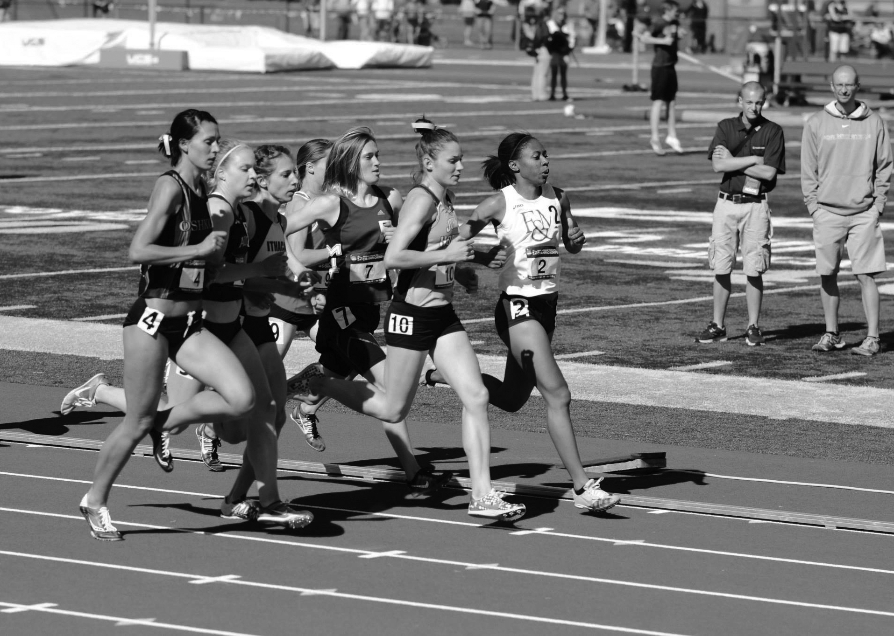
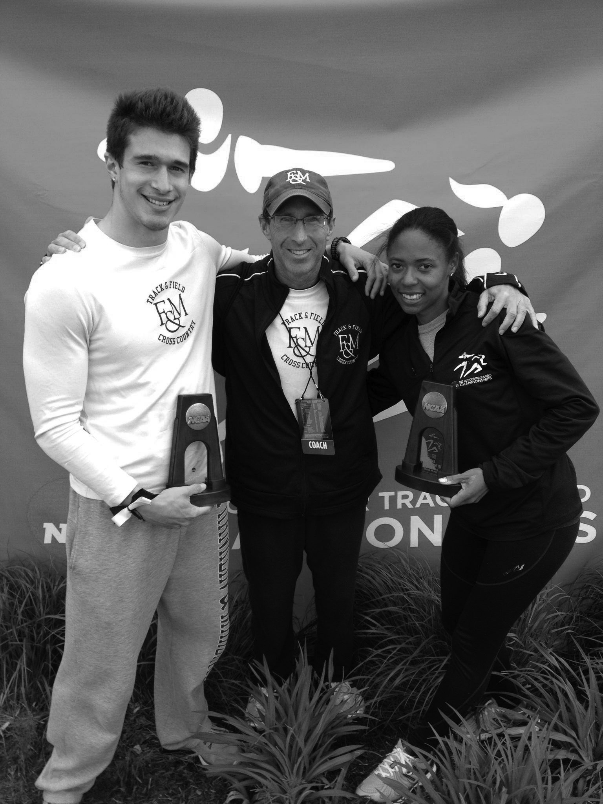

I had run the best race of my life, a 4:21.23 in the 1500 meter race. I was a college senior, and this had been my final race to mark the end of my collegiate running career. My performance meant that I had become the 5th fastest woman in Division III Track & Field history for the 1500 meter run.

May 23, 2013, NCAA Division III Outdoor Track
& Field Championships
I lay on the infield turf at University of Wisconsin Lacrosse’s football stadium. I was out of breath, numb, partly in tears, in pain, and feeling relieved and nostalgic. I felt like I was on top of the world. I was ending my collegiate career on the highest note possible. I knew that this would be the last time that I would feel this way for a long time.
Graphic design was something I had wanted to do since high school, but due to my intense involvement in collegiate athletics, I hadn’t been able to study design at Franklin & Marshall College (F&M), a liberal arts college in Pennsylvania.
My plan had been to go to F&M and major in Special Studies, which would have allowed me to construct my own major and take courses at nearby institutions such as Millersville University and Pennsylvania College of Art and Design. Unfortunately, the credits from these other institutions did not transfer fully. I would have been able to earn only .75 per 1 credit. So I had chosen the next best alternative: I majored in Studio Art and earned a back up degree in Economics.
In my junior year, I had discovered a one-year post-baccalaureate program in Graphic Design at Maryland Institute College of Art (MICA) in Baltimore, MD. This program welcomed students who did not have a graphic design background and placed them into an immersive program with other beginning students.
As a senior, I was about to make a huge transition.
I had a ten-year career running track and cross country. I was about to leave it all behind.
What would I do? Would I put my energy into studying graphic design at MICA? Or would I search for a job related to my bachelor of arts majors in Economics or Studio Art? I often make decisions based on intuition. My intuition was pulling me toward graphic design. Since high school, I always had dreamed about starting my own business called Runner’s Avenue. It would be an online store dedicated to selling products such as posters, clothing, personal record and training journals, and much more.
Economics was an interesting field, but I was not passionate about it. I could not see myself reaching my full potential in that field. As for Studio Art, I enjoyed being a fine artist, but I always had in mind that I would someday work in the running community.
My decision about whether to continue my education or enter the workforce was not hard, but I hesitated about choosing the school I would attend. I applied to three schools: Rhode Island School of Design, Minneapolis College of Art and Design (MCAD), and Maryland Institute College of Art, but I was strongly considering schools in New York.
New York was not my ideal location for school, but the love of my life at the time was strongly considering Columbia University for Dental School.
I had met him on the track team freshman year, and we had instantly connected. By senior year, we were on the rocks, but I had hope that things would get better. I did not want distance to hurt our chances of saving our relationship.
Despite my strong desire to stay close to him, I never applied to schools in New York. New York was not an appealing place for my calm personality. Every time I went to New York, I felt that something crazy would happen. After getting accepted to both MCAD and MICA, I chose MICA. Baltimore did not have the best reputation as a safe places to live, but it was close enough to New York so that I could travel cheaply on the Bolt Bus to New York to see my love. It was also a close drive to my family in Pennsylvania.
MICA ranked higher nationally for graphic design, and it was an inspiration to learn that their MFA students contribute to publications written by Ellen Lupton and Jennifer Cole Phillips. That made me see that the faculty at MICA believed in their student’s abilities and trusted their own teaching about design.
So when my college graduation arrived in May 2013, I had to prepare to say goodbye to all of my friends, teammates, and co-workers. After graduation, I had one final racing event: the NCAA Division III Outdoor Championships at University of Wisconsin-Lacrosse where I ran the 1500 meter race that capped my whole college experience.

Nils Michaelis, John Stoudt
After the race, I flew home with my coach, John Stoudt, and my teammate, Nils Michaelis. I was thinking about what was to come next. I accomplished more in my running career than I could have imagined. I was an 8x All-American, and I had broken several school records.
I had to say goodbye to a part of myself that I did not know how to leave the runner in me.
I arrived in Baltimore at the end of summer 2013. I was excited to start my new life in a place where I had zero ties. I was moving into an apartment with a roommate I had never met and entering a new city. I had no clue where anything was or how the city worked. I did not know what areas were safe or dangerous. I did not know what to expect. However, I felt inspired by the prospect of studying design, finally.
DESIGN NEWBIE
I sat in an auditorium for orientation. I was anxious about meeting new friends and anxious about what was to come. I did not understand this world at all, but I wanted to be there.
The first year went by quickly. In my first semester, I had four classes: my main studio & workshop course, Typography I, and Interactive Media I. As each semester quickly passed by, I learned more about graphic design. At the conclusion of my first year, I was not happy with my design skills. In comparison with my peers, I felt that I was not among the top designers.
There was nothing wrong with not being the best, but I admit I had a very hard time leaving behind my status as an elite runner and arriving as a newbie at the bottom of a new field. I felt defeated, and I had just begun. I worried that graphic design wasn’t the right path for me. I doubted that I would ever become a great designer.
What confirmed my doubts even more was when I was rejected in the first round of the application process for acceptance into MICA’s MFA Graphic Design program.
What confirmed my doubts even more was when I was rejected in the first round of the application process for acceptance into MICA’s MFA Graphic Design program. I was put on the waitlist, but I was pessimistic about any of the accepted students rejecting their offer from MICA. For a few weeks, I sat around bummed and bitter and figured I had to start looking for jobs. After a month, I received word that I made it off the waitlist. I was relieved that I could extend my studies in graphic design for two more years.
I decided that I needed to look at my current feelings about graphic design in a more positive light.
I saw my process of growing as a design student as an opportunity to reflect on the strategies and habits that led to my success as a runner. The persistence, practice, competitiveness, patience, and passion that I put into running would also be what I would have to put into graphic design in order to improve. I could also use my experiences as a runner and interests in athletics to drive the inspiration for my graphic design projects. I could use the runner in me as inspiration to work harder and set myself apart from other designers. I looked at ways in which design and athletics already correlated or overlapped with one another. Then I imagined how design and athletics could correlate in new ways.
Athletics was on my mind as I considered directions for my thesis at the end of my first-year in the MFA program. Thesis is a long-term final project in graduate school that allows students to contribute and explore an idea related to graphic design. The thesis is one of the biggest, most important parts of graduate school as we work toward the MFA degree in Graphic Design.
I wanted an idea that would speak to who I was as a person, designer, and athlete. I wanted this project to merge athletics and graphic design and to stand out to companies. I dreamed about working for such companies like Nike, Under Armour, Fitbit: basically any company that focused on athletics or technology for runners. Most of all, I wanted to work on an idea that I loved.
I considered conceptual uniforms for art school athletic teams. What would it be like if art schools had an athletics department? How would their uniforms push the boundaries of the typical athletic uniform? How would famous artists or design concepts inspire the design of their uniforms? Can you imagine a uniform inspired by Pablo Picasso? Would these uniforms be disjointed and collage-like?
I considered imaginary design/sports teams. For instance, what design team would win in a type battle? Sans serif or Serif? What about the pen tool team vs. the shape tool team? How could I use these concepts to develop uniforms and the branding of a new “sport” and team?
THESIS INFLUENCE
Over the summer before my second year, I continued to think about these ideas. Once my final year at MICA began, I had to decide what I would pursue for my thesis. It was now or never.
I leaned toward the fictional athletic design teams: Lettering vs. Serif, for example. But the logistics of making it real did not click in my head. I could not figure out how or what these two teams would battle over. I was not sure how I would tell the story of these fictional athletic design teams. Lettering is intrinsically more expressive than typography. I felt that whatever would classify the winner would be based on preference and not based on a set of criteria or rules.
One day in Ellen Lupton’s class, my classmates and I were discussing our thesis ideas. Ellen suggested I focus on lettering and use the alphabet as an aide to select sports and design a letter for each sport. It sounded like a great idea, but I was worried that using the alphabet was a bit childish. And I didn’t feel I had complete ownership over the idea.
Later, I expressed my concerns, and Ellen made it clear that I would make the idea my own once I started. A good friend of mine said, “Ideas are cheap. Execution is everything.” I had to focus on translating the idea into the appropriate format and framework to be understood and consumed by my audience.
So I made my choice: I would select sports that began with each letter of the alphabet, and I would create unique letterforms for each one. I wanted to give my thesis purpose, so I set out to do some research.
I noticed that the term letter was only used as a verb in the context of art/design and athletics. In design, it means to draw or design letterforms, while in athletics it means to be given a school or college initial as a mark of proficiency in sports.
In my research, I noticed that the term letter was only used as a verb in the context of art/design and athletics. In design, it means to draw or design letterforms, while in athletics it means to be given a school or college initial as a mark of proficiency in sports. This is where the terminology, “varsity athlete” comes from because varsity players “letter” in the sport they play. Typically, you will find these varsity letters on letterman jackets or other pieces of clothing and equipment, such as sports bags, hats, and cardigan sweaters.
The lettering tradition started in the 1880’s at Harvard University. The baseball players were given a jacket with the college’s initial on it to mark the most valuable players on the team. These particular players became popular around campus and even used these jackets to mark their territory: that is, they gave their jackets to the women they were dating. Harvard’s concept of lettering in a sport spread to other colleges and universities, secondary schools, and even pop culture, thus becoming a long-standing tradition. Discovering this connection between the word lettering from an athletic and design/art perspective was just what I needed to begin the project.
From October 2015 to April 2016, I developed my thesis. I named my thesis “Athletters.” I coined the term Athletters to mean “athletic letters.” Athletters explores the visual vocabulary of twenty-six sports from A to Z: from Air Hockey, Bowling and Croquet to Xare, Yoga, and Zorbing through typographic constructions. What sets Athletters apart from varsity letters is that they shift a letter’s connotation from an institutional representation and mark of excellence toward sport pride, sport recognition, and genuine, athletic enjoyment.
Design Strategy 1: Sports selection
Throughout the development of Athletters, there were three main design strategies and/or decisions that I implemented. The first design strategy was the sports selection. I had to choose what sport would represent each letter of the alphabet. Should I choose Bowling or Basketball for the letter B? Or should I choose Swimming or Soccer for the letter S? All of these decisions were based upon my goals for Athletters. My goal was to introduce and educate individuals about sports. I also wanted to highlight sports that were considered unworthy or not a sport. For instance, Quidditch is a legitimate sport, but lay people see it as a joke and not real (even though, yes, it developed from a fictional book). However, there are athletes who play Quidditch and are serious about it.
I wanted Athletters to recognize and celebrate the pride that these athletes have for their sports. I wanted to incorporate a mixture of: popular sports (Football, Track, and Swimming) and less popular sports (Quidditch, Ultimate Frisbee, Hurling); land sports (Volleyball and Motocross) and water sports (Diving and Rowing); and team (Volleyball, Netball, and Hurling) and individual sports (Orienteering, Golf, and Karate).
Some may disagree with the choice to mix popular and unpopular sports. However, it was important because I wanted every sport to be looked at on the same playing field. In my eyes, there is no sport that should be more important than any other sport; therefore, they should all be recognized accordingly.
Design Strategy 2: Parallelism/Unification
Another imperative strategy was to maintain parallelism between each letter. In graphic design, we group together elements that are synonymous with one another, and since Athletters explored sports through the alphabet, there were no exceptions here. I used three elements that maintained unification in the alphabet: color, line weight, and borders.
I used vibrant colors in each letter that conceptually resonated with each sport. I wanted the letters to be fun and not too intense because athletics are fun and not always about competition. These letters serve as a celebratory emblem for each sport; therefore, throughout the alphabet, I used brighter, eye-catching colors.
Some may criticize the decision to include the double borders around each letter. However, this was an important element that kept the set of letters in alignment with the idea of varsity letters. If you go back in the history and look at varsity letters, they are constructed using chenille material that is sewn onto either one or two layers of colored felt. Additionally, these added borders make the letters have more visual and dominant presence.
Design Strategy 3: Simplification
Less is more. I tried to stay in alignment with this mantra as I brainstormed and sketched ideas for each letter. The letters that are most successful are the simplest. This simplification was achieved through focusing on single elements from each sport that hinted at what the sport was. For instance, in the letter F, I used the graphic markings seen on a football field to construct the form of the F. Air hockey is another great example; I used the tiny air holes that keep the air hockey puck in movement across the air hockey table.
Some may say that simplification is bad and does not provide enough details about each sport. In response, the letters are meant to give clues to each sport and not tell the whole story. Additionally, each letter is meant to be worn as a single visual element on an individual’s clothing accessories. Fewer details allows for each letter to stand out from afar.